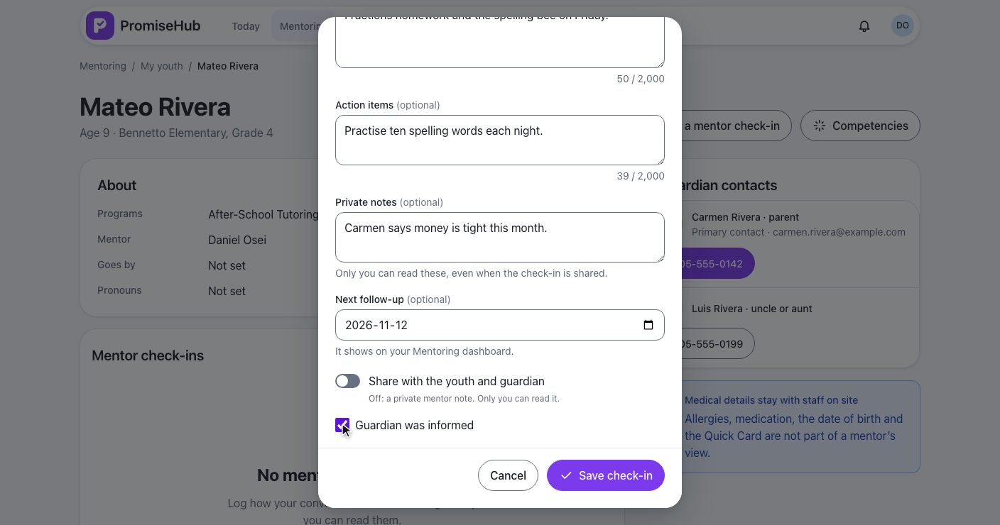
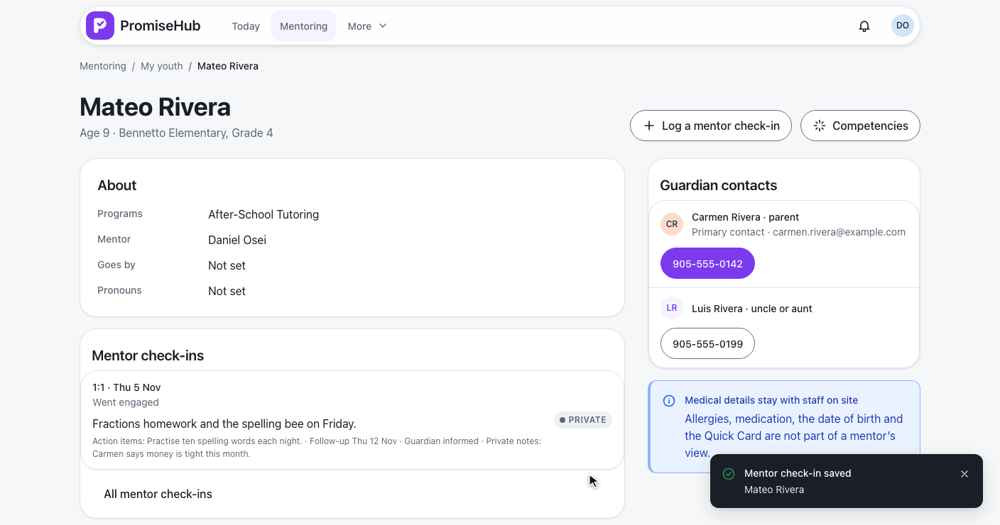
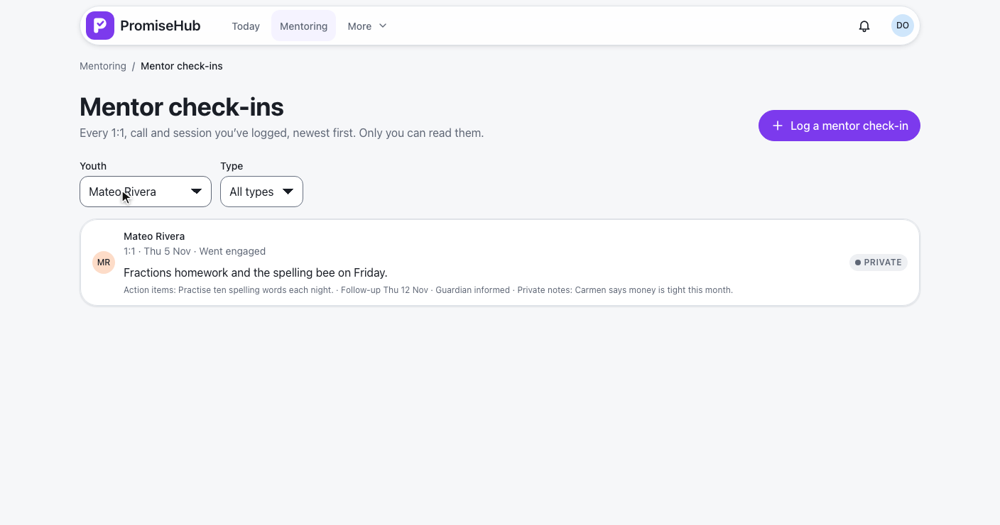
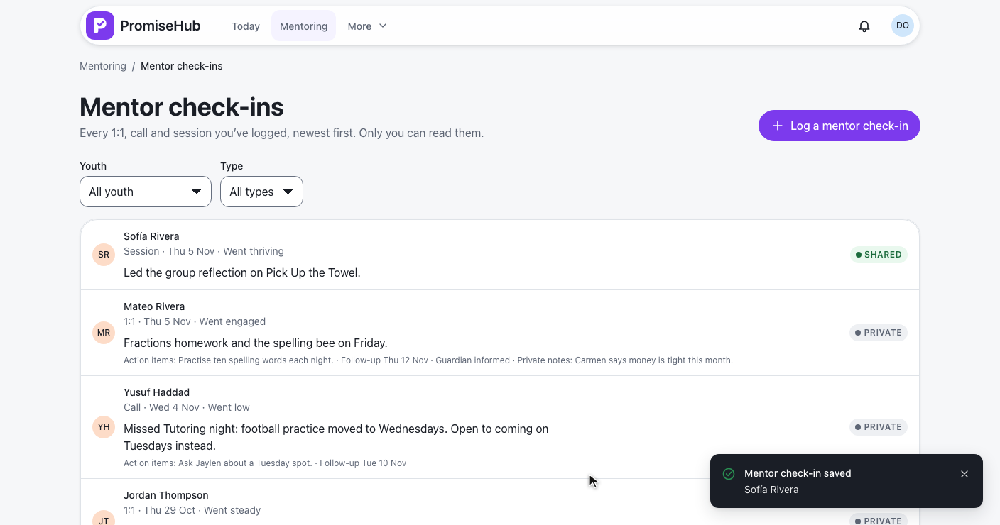
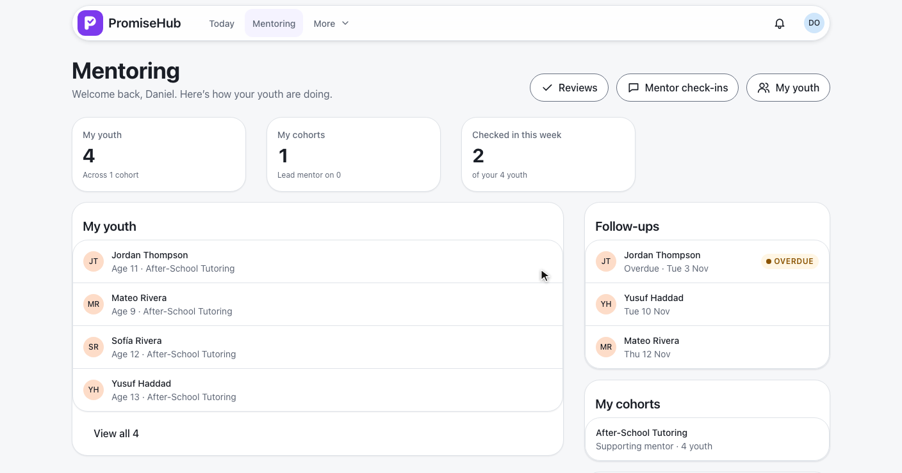
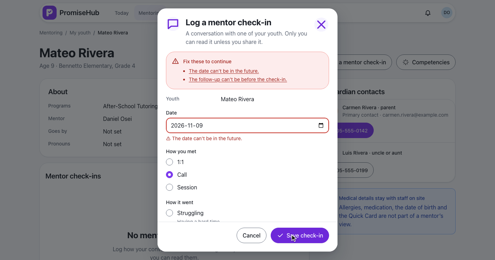
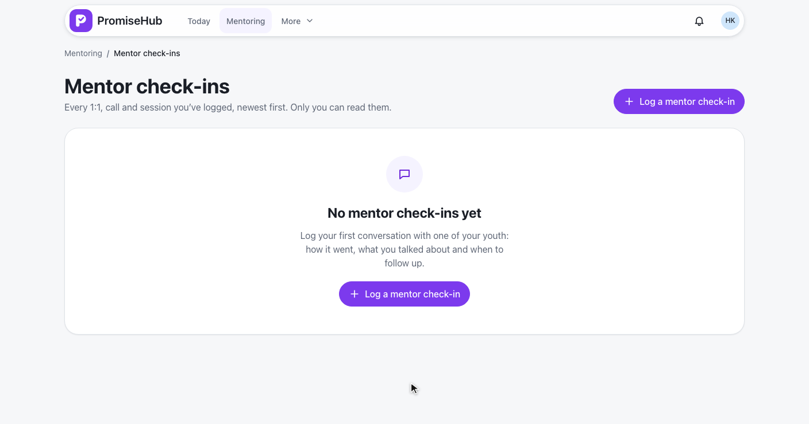

PromiseHub · Video 67
Record mentor check-ins
One conversation at a time, read only by the mentor who wrote it
One conversation at a time, read only by the mentor who wrote it
From Mateo's record: how they met, how it went, what's next.


| Field | Rule |
|---|---|
| Youth | Required, in his scope (403 audited), his organization (404) |
| Date | Required, not after the organization's today |
| How you met · How it went | 1:1, Call, Session · Struggling to Thriving |
| Topics, action items, private notes | Optional, up to 2,000 characters |
| Next follow-up | Optional, not before the date |
| Audit | Created, with shared, guardian informed, follow-up; never the words |
POST /mentoring/check-ins · L2-090 · ADR 0061
Newest first, filtered by youth or type.



| Caller | Answer |
|---|---|
| Daniel, the author | His own, for youth in his scope |
| Another mentor of the youth | Never listed |
| A youth outside his scope | 403, audited |
| Admins, directors, staff, youth, guardians | 403 |
| Another organization | 404 |
| Mentoring off | 404, the page goes to Today, nothing deleted |
Follow-ups, the history, and the dialog as a bottom sheet.
Invalid, failed, empty, error, Mentoring off.


MentorCheckInsTests: logging, checks, audit without words, history and filters, another mentor, scope, follow-ups, roles, tenancy, Mentoring offmentor-check-in.spec.ts, mentor-check-in-history.spec.ts, mentor-follow-ups.spec.ts on phone and laptop, with axe
Next: flag youth who are at risk